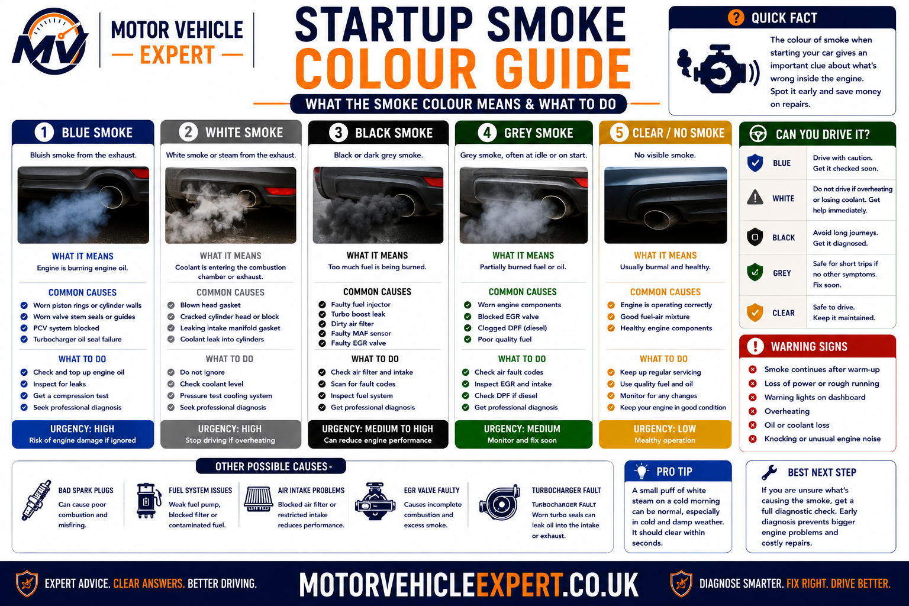
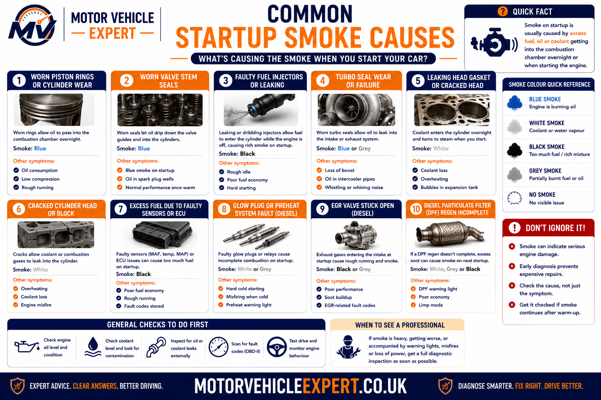
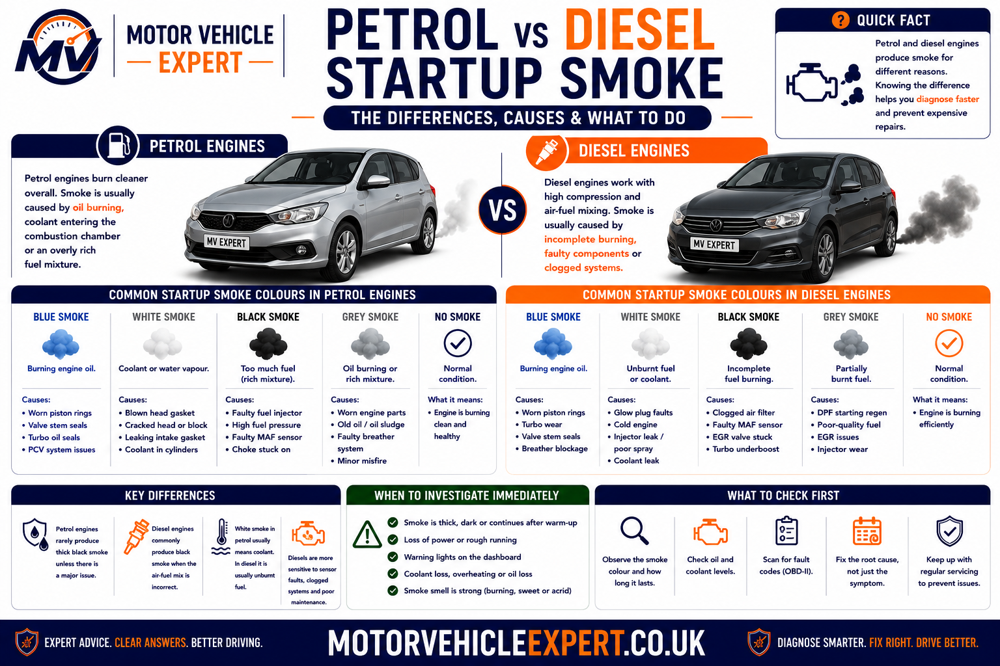
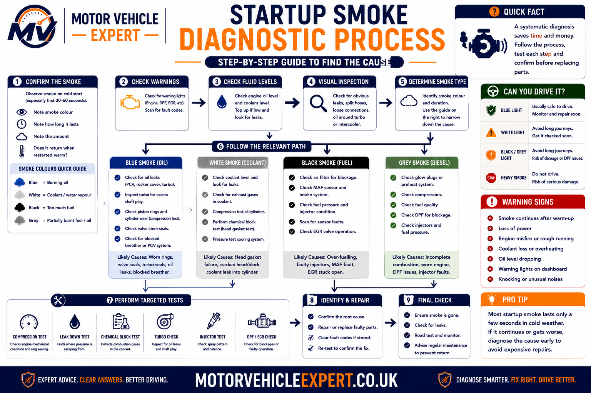
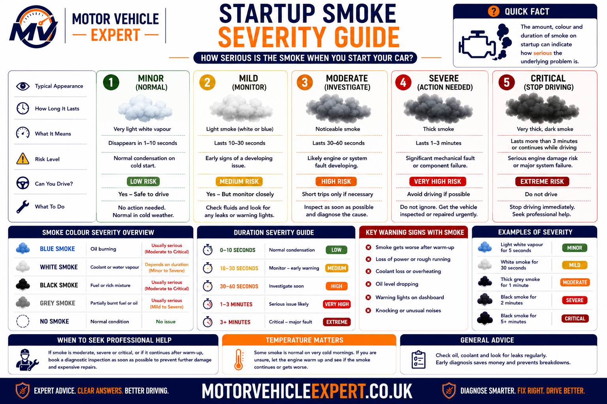

Why Does My Car Smoke When Starting?
A small amount of thin white vapour immediately after a cold start is usually harmless condensation evaporating from the exhaust system. Persistent white, blue, grey or black smoke, however, often indicates a mechanical fault involving coolant, engine oil, fuel delivery, air intake or combustion. The colour, smell, duration and operating temperature all provide important diagnostic clues.
The most important observation is whether the smoke disappears within a few minutes. Vapour that clears quickly as the exhaust warms is generally normal. Smoke that continues after the engine reaches operating temperature should always be investigated.
Thin White Vapour
Condensation during cold weather that disappears after warming up.
Blue Smoke
Engine oil entering the combustion chamber through worn seals, turbochargers or piston rings.
Persistent White Smoke
Possible coolant entering the cylinders because of a head gasket, cracked cylinder head or engine block fault.
Black Smoke
Excess fuel caused by injector, airflow, turbo or engine management faults.
Always consider the smell, engine temperature, coolant level, oil level, warning lights and how long the smoke remains visible. These clues often identify the fault more accurately than the smoke colour by itself.
What Does Each Exhaust Smoke Colour Mean?
Exhaust smoke colour provides one of the quickest ways to narrow down an engine fault. Although different problems can sometimes produce similar colours, the combination of colour, smell and duration usually points towards the correct system.

White
Condensation or coolant entering the combustion chamber.
Blue
Engine oil burning inside the cylinders.
Grey
Oil, fuel or turbocharger related combustion problems.
Black
Too much fuel or insufficient air during combustion.
White Smoke When Starting
Thin white vapour on a cold morning is usually nothing more than water vapour produced as condensation inside the exhaust system evaporates. Nearly every petrol and diesel engine will produce this during cold, damp weather.
Persistent white smoke after the engine has warmed up is very different. Thick white smoke that continues during normal driving often indicates coolant entering one or more cylinders, commonly through a failed head gasket, cracked cylinder head or other internal engine fault.
- Cold weather.
- Disappears within minutes.
- No coolant loss.
- No overheating.
- No sweet smell.
- Smoke continues hot.
- Coolant level falling.
- Sweet coolant smell.
- Overheating.
- Poor running.
Do not continue driving if thick white smoke is accompanied by coolant loss or overheating. Severe engine damage may occur if coolant continues entering the cylinders.
Blue Smoke Means Engine Oil Is Burning
Blue smoke is one of the strongest indicators that engine oil is entering the combustion chamber. The smoke often has a distinctive burnt-oil smell and may appear only during startup, after idling or continuously while driving depending on the source of the oil leak.
Valve Stem Seals
Blue smoke immediately after startup that often clears within a short time.
Turbocharger
Oil enters the intake or exhaust side of the turbo causing smoke during acceleration and startup.
Piston Rings
Worn rings allow oil into the cylinders causing continuous blue smoke and increased oil consumption.
Repeated blue smoke almost always accompanies increased engine oil consumption. Check the dipstick regularly and avoid allowing the oil level to fall below the minimum mark.
Grey Smoke on Startup
Grey smoke is often the most difficult exhaust colour to diagnose because it can be produced by several different faults. Depending on the vehicle, grey smoke may indicate small amounts of engine oil burning, excessive fuel entering the cylinders, automatic transmission fluid on older vehicles or a developing turbocharger problem.
Unlike condensation, grey smoke usually has a noticeable smell and tends to return repeatedly rather than disappearing completely after the exhaust warms. Modern petrol and diesel engines commonly produce grey smoke when combustion is incomplete or when engine oil enters the intake system.
Light Grey Smoke
Small quantities of engine oil burning before developing into obvious blue smoke.
Rich Combustion
Excess fuel, leaking injectors or poor combustion producing grey exhaust fumes.
Developing Turbo Wear
Worn turbo oil seals may initially create grey smoke before becoming noticeably blue.
Grey smoke that gradually becomes blue often indicates worsening oil consumption. Monitor the engine oil level and arrange diagnosis before significant engine damage develops.
Black Smoke When Starting
Black smoke indicates that the engine is burning too much fuel or not receiving enough air for complete combustion. Diesel engines naturally produce more visible soot than petrol engines, but persistent black smoke from either engine type usually indicates a fault that should be repaired.
- Leaking fuel injectors.
- Faulty coolant temperature sensor.
- Mass airflow sensor faults.
- Restricted air filter.
- ECU fuelling problems.
- Injector wear.
- Blocked air intake.
- Turbocharger faults.
- EGR valve deposits.
- DPF regeneration issues.
Heavy black smoke increases fuel consumption, raises emissions and may indicate injector, airflow or turbocharger problems that can worsen if ignored.
Most Common Reasons a Car Smokes When Starting
Although smoke colour narrows the diagnosis considerably, several mechanical systems should always be considered before replacing parts. Professional diagnosis combines smoke colour with fluid levels, engine performance, warning lights and fault codes.

Head Gasket
Coolant enters the combustion chamber producing persistent white smoke.
Valve Stem Seals
Oil drips into the cylinders while parked and burns during startup.
Turbo Oil Seals
Oil leaks into the intake or exhaust housing causing blue or grey smoke.
Injector Problems
Excess fuel creates black or grey smoke together with poor starting and rough running.
Piston Rings
Worn rings allow engine oil into the combustion chamber.
Restricted Airflow
Dirty air filters and airflow sensor faults increase fuel richness.
Sensor Faults
Incorrect temperature or airflow readings alter fuel delivery during cold starts.
Condensation
Water vapour disappears naturally as the exhaust reaches operating temperature.
Petrol and Diesel Startup Smoke Compared
Petrol and diesel engines develop startup smoke for different reasons. Understanding the differences helps narrow the diagnosis before any parts are removed.

- Valve stem seals.
- Piston ring wear.
- Ignition faults.
- Rich fuel mixture.
- Coolant entering cylinders.
- Throttle-body problems.
- Glow plug faults.
- Injector wear.
- EGR valve deposits.
- Turbocharger wear.
- DPF regeneration issues.
- High-pressure fuel faults.
Diesel engines often produce a brief puff of smoke during cold starts, particularly in low temperatures. Continuous smoke after warm-up is far more significant and should always be investigated.
When the Smoke Appears Provides Important Clues
Smoke colour is important, but the timing of the symptom can be equally useful. Record whether the smoke appears only after the vehicle has stood overnight, after idling, during acceleration or continuously after the engine reaches operating temperature.
Only on the First Start of the Day
A brief white vapour cloud may be normal condensation. A repeated blue puff can indicate oil entering the cylinders while the vehicle is parked, often through worn valve stem seals or a turbocharger oil circuit.
After Standing for Several Hours
Smoke after a long parking period can point towards oil or coolant slowly entering the combustion chamber while the engine is switched off.
Only During Cold Weather
Thin white vapour is often condensation. Diesel engines may also produce temporary white or grey smoke when weak glow plugs delay clean combustion.
After Idling
Blue or grey smoke after a period of idling can indicate worn valve stem seals, turbocharger oil leakage or crankcase-ventilation faults.
During Acceleration
Blue smoke under load can indicate piston-ring or turbocharger wear. Black smoke may point towards excessive fuelling, low boost or restricted airflow.
Continuous After Warm-Up
Persistent smoke is less likely to be harmless condensation. Coolant, engine oil, fuel-delivery and internal-engine faults should be investigated.
A clear description such as “blue smoke only after standing overnight” is far more useful to a technician than simply saying the car sometimes smokes. Record the colour, duration, smell, engine temperature and driving condition.
How a Professional Garage Diagnoses Startup Smoke
Accurate diagnosis requires more than identifying the smoke colour. A professional garage should combine driver observations with fluid-level checks, electronic diagnostics, mechanical tests and verification under the same conditions that originally produced the smoke.

Confirm Colour and Duration
Observe the exhaust from a genuine cold start and confirm whether the smoke is white, blue, grey or black and how long it remains visible.
Check Oil and Coolant
Record fluid levels before further use and inspect for external leaks, contamination, overfilling or evidence that a level is falling.
Scan the Engine Management System
Read stored and pending codes, freeze-frame data, fuel trims, coolant temperature, airflow, boost pressure and cylinder misfire information.
Test the Suspected System
Carry out cooling-system, compression, injector, turbocharger, crankcase-ventilation or emissions tests according to the evidence.
A code can identify an affected system or abnormal reading, but it does not automatically prove that a sensor, injector or turbocharger has failed. Test results should support every replacement decision.
What Should a Garage Check?
The correct inspection depends on the smoke colour and symptom pattern. Not every vehicle requires every test, but the garage should explain what evidence led to the recommended checks and repair.
Visual, Fluid and Electronic Inspection
- Confirm smoke from a cold start.
- Check engine oil level and condition.
- Check coolant level and concentration.
- Inspect the intake and exhaust system.
- Read engine and emissions fault codes.
- Review freeze-frame and live data.
- Check for visible external leaks.
- Inspect service and repair history.
Mechanical and System Testing
- Cooling-system pressure test.
- Combustion-gas test where appropriate.
- Compression or cylinder leak-down test.
- Injector balance or leak-off testing.
- Turbocharger shaft and oil-path inspection.
- Crankcase-ventilation system checks.
- Glow-plug testing on diesel engines.
- DPF, EGR and boost-system diagnosis.
Cooling-System Evidence
A pressure test, coolant-loss assessment and combustion-gas checks may be needed when persistent white smoke is accompanied by overheating or a falling coolant level.
Oil-Control Evidence
Oil consumption, compression, breather operation, valve seals and the turbocharger oil path should be assessed before internal engine work is authorised.
Air and Fuel Evidence
Injector operation, fuel pressure, airflow, boost, EGR condition and exhaust restriction should be tested rather than guessed.
Startup smoke may clear before the vehicle reaches the garage. A clear video showing the first start of the day, smoke colour and duration can provide useful supporting evidence, but it should not replace workshop testing.
How Serious Is Startup Smoke?
The seriousness of startup smoke depends on more than colour alone. Duration, thickness, smell, fluid loss, warning lights, engine temperature and running quality all help determine whether the condition is harmless, needs monitoring or requires the vehicle to be stopped.

Likely Condensation
Thin white vapour on a cold or damp morning that disappears as the exhaust warms, with no fluid loss or warning lights.
Repeated Brief Smoke
A small blue, grey or dark puff appears repeatedly after standing, but the engine otherwise runs normally.
Persistent Coloured Smoke
White, blue, grey or black smoke continues after warm-up or appears with rough running, poor starting or reduced performance.
Smoke With Fluid Loss
Heavy smoke appears with overheating, rapidly falling coolant or oil, warning lights, severe misfiring or smoke entering the cabin.
- The oil-pressure warning light remains illuminated.
- The engine is overheating or losing coolant rapidly.
- Thick white smoke continues after warm-up.
- Heavy blue smoke appears with a falling oil level.
- The engine runs severely rough or repeatedly stalls.
- Smoke or exhaust fumes enter the passenger compartment.
Can You Drive a Car That Smokes When Starting?
A brief cloud of normal condensation does not normally make a vehicle unsafe. Persistent coloured smoke should be treated differently because continued driving may lower the oil or coolant level, damage emissions equipment, increase overheating risk or allow an existing engine fault to become more expensive.
Brief Condensation
- Thin white vapour only.
- Cold or damp weather.
- Clears within a few minutes.
- No unusual smell.
- No oil or coolant loss.
- No warning lights.
Arrange Diagnosis Soon
- Repeated blue or grey startup puff.
- Occasional black smoke.
- Small but measurable fluid loss.
- Rough cold idle.
- Intermittent engine warning light.
- Smoke gradually becoming worse.
Recover the Vehicle
- Overheating.
- Oil-pressure warning.
- Rapid coolant or oil loss.
- Continuous heavy smoke.
- Severe misfire or stalling.
- Smoke entering the cabin.
Adding oil or coolant may temporarily restore the level, but it does not repair the reason the fluid is being lost or burned. A falling level should be investigated before further long-distance driving.
Can Startup Smoke Cause an MOT Failure?
A brief cloud of condensation does not automatically cause an MOT failure. The tester assesses exhaust smoke after the engine idle has stabilised and also carries out the emissions checks that apply to the vehicle's fuel type, age and emissions system.
Dense blue smoke or clearly visible black smoke can result in failure. Diesel vehicles are also subject to a smoke-opacity test where applicable, while missing, obviously modified or defective emissions-control equipment and certain warning-light faults may create additional MOT problems.
Cold Condensation
Thin water vapour that clears as the exhaust warms is not the same as dense coloured exhaust smoke.
Dense Blue Smoke
Visible oil-burning smoke after idle has stabilised can result in an MOT failure and indicates an engine fault requiring diagnosis.
Clearly Visible Black Smoke
Heavy black smoke can indicate poor combustion or excessive emissions and may result in failure.
| Smoke or related condition | Possible MOT outcome | Recommended action |
|---|---|---|
| Thin condensation that clears | Does not automatically fail | Allow the engine and exhaust to reach normal temperature. |
| Dense blue smoke | Failure risk | Diagnose oil burning before the test. |
| Clearly visible black smoke | Failure risk | Check fuelling, airflow, injectors and emissions systems. |
| Diesel smoke reading above the permitted limit | Failure | Repair the combustion or emissions fault before retesting. |
| Engine management or emissions-system defect | May fail depending on the defect | Scan and diagnose the system before the MOT. |
Cleaning the tailpipe, clearing fault codes or warming the vehicle briefly does not repair an oil-burning, cooling-system, fuelling or emissions fault. The underlying cause should be diagnosed before the MOT.
Typical Startup-Smoke Repair Costs UK
Startup smoke repair costs depend entirely on the confirmed cause. The broad UK guide prices below are intended for early budgeting rather than as fixed quotations. Vehicle design, engine size, parts quality, labour access and additional damage can change the final cost considerably.
Air Filter or Intake Repair
£50–£220Restricted airflow, damaged intake hoses or simple air-filter faults.
Sensor Replacement
£100–£450Airflow, coolant-temperature, oxygen or pressure-sensor faults.
Glow Plug Repair
£120–£450Depends on plug access, the number replaced and whether any plug is seized.
Injector Repair
£180–£1,200+Cleaning, testing, reconditioning or replacing one or more petrol or diesel injectors.
Valve Stem Seal Repair
£500–£1,500+Labour varies significantly according to cylinder-head access and repair method.
Turbo Repair or Replacement
£700–£2,000+May also require oil-feed, intercooler, intake and contamination checks.
Head Gasket Repair
£900–£2,500+Cost depends on overheating damage, cylinder-head condition and engine access.
Piston Ring or Engine Repair
£1,500–£5,000+Major strip-down, engine rebuilding or replacement may be required.
Professional Diagnosis
£70–£180Initial scan, fluid checks, visual inspection and targeted testing.
| Likely repair | Broad UK guide price | Usually considered when |
|---|---|---|
| Diagnostic inspection | £70–£180 | The smoke source has not yet been confirmed. |
| Sensor or intake repair | £50–£450 | Black smoke, rich running or abnormal live data is present. |
| Glow plugs | £120–£450 | A diesel smokes and runs roughly during cold starts. |
| Injector work | £180–£1,200+ | Fuel imbalance, leak-off or spray-pattern faults are confirmed. |
| Turbocharger repair | £700–£2,000+ | Oil leakage, boost loss or turbo wear is confirmed. |
| Head gasket repair | £900–£2,500+ | Coolant enters the cylinders or overheating damage is found. |
| Internal engine repair | £1,500–£5,000+ | Compression loss, ring wear or major mechanical damage exists. |
A garage should provide test evidence before recommending a turbocharger, cylinder-head or complete-engine repair. Smoke colour identifies a fault group; it does not prove which component has failed.
Repair, Monitor or Investigate?
Likely Condensation
Thin white vapour clears quickly in cold weather, fluid levels remain stable and the engine has no warning lights or running problems.
Repeated Startup Puff
Blue, grey or black smoke returns regularly, but there is no severe fluid loss, overheating or major performance problem.
Persistent Smoke With Warning Signs
Smoke continues after warm-up or appears with falling oil or coolant, overheating, warning lights, rough running, power loss or abnormal engine noise.
Should You Buy a Car That Smokes When Starting?
Never assume startup smoke is caused by condensation simply because the seller says the engine is cold. View the vehicle from a genuine cold start, check the oil and coolant before starting and watch the exhaust until the engine begins warming.
Normal Cold Vapour
Thin white vapour clears quickly, the engine runs smoothly and all fluid levels remain stable.
Small Repeated Puff
Obtain an independent diagnosis and written estimate before agreeing a purchase price.
Heavy Persistent Smoke
Avoid vehicles with overheating, major fluid loss, mechanical knocking, severe misfires or sellers who refuse a cold-start inspection.
Valve-seal, glow-plug, injector and coolant-entry faults may be easiest to detect during the first start of the day. A pre-warmed engine can hide valuable evidence.
Startup-Smoke Inspection Checklist
Work through these observations before visiting a garage or inspecting a used vehicle. Clear evidence helps shorten diagnostic time and reduces the chance of unnecessary parts replacement.
Record the Symptom
- Confirm the smoke colour in natural daylight.
- Record whether the engine is completely cold.
- Time how long the smoke remains visible.
- Note whether the smell is sweet, oily or fuel-like.
- Check whether the smoke returns under acceleration.
- Record rough idle, hesitation or poor starting.
- Photograph or film the cold start where safe.
- Record every warning light displayed.
Check Supporting Evidence
- Check the engine oil level on level ground.
- Check coolant only when the engine is cold.
- Look for oil or coolant contamination.
- Inspect for visible external fluid leaks.
- Check the service and repair history.
- Scan fault codes before clearing anything.
- Request test evidence for major repairs.
- Verify that the smoke has stopped after repair.
Identify the smoke pattern, confirm the fluid or combustion evidence, test the suspected system and repeat the same cold-start conditions after repair. A repair is only complete when the smoke and its underlying cause no longer return.
Continue Your Startup-Smoke Diagnosis
Startup smoke can overlap with rough cold running, engine misfires, coolant loss, oil burning, turbocharger faults, fuel-system problems, warning lights and emissions failures. Use the guide group that most closely matches the smoke colour, smell, warning lights and driving symptoms shown by your vehicle.
Car Rough Idle When Cold
Diagnose shaking, hunting, stalling and weak combustion during the first few minutes after a cold start.
Read Cold-Idle GuideEngine Misfire Symptoms and Causes
Compare startup smoke with ignition, injector, intake, compression and cylinder-specific misfire faults.
Read Misfire GuideCar Vibrates at Idle
Separate engine-running faults from worn engine mounts when smoke is accompanied by shaking while stationary.
Read Idle-Vibration GuideEngine Management Light Guide
Understand steady and flashing warning lights, driving risk and the correct diagnostic response.
Read Engine-Light GuideExhaust Smoke Colour Guide
Compare white, blue, grey and black smoke across startup, idle, acceleration and normal driving conditions.
Read Smoke-Colour GuideCar Losing Coolant but No Leak
Investigate internal coolant loss, pressure faults, heater leaks, evaporation and head-gasket concerns.
Read Coolant-Loss GuideBlown Head Gasket Symptoms
Check persistent white smoke, overheating, coolant pressurisation, misfires and contaminated fluids.
Read Head-Gasket GuideCar Smells Like Burning Oil
Compare blue smoke with oil leaks, oil reaching hot exhaust parts, turbo faults and internal oil burning.
Read Burning-Oil GuideCar Overheating Causes Explained
Understand thermostat, radiator, water-pump, coolant-loss and head-gasket causes of overheating.
Read Overheating GuideCar Overheating: What to Do
Follow safe actions when smoke appears with rising temperature, coolant loss or warning lights.
Read Emergency GuideCoolant Bubbling in Expansion Tank
Investigate trapped air, overheating, combustion gases and cooling system pressurisation.
Read Bubbling-Coolant GuideCoolant Warning Light On
Understand low coolant, temperature faults, sensor problems and when the vehicle should be stopped.
Read Coolant-Light GuideCar Hesitates When Accelerating
Diagnose ignition, injector, airflow, boost and fuel-pressure faults when smoke is joined by flat spots.
Read Hesitation GuideCar Losing Power When Accelerating
Compare smoke with low boost, fuel starvation, exhaust restriction, limp mode and engine-management faults.
Read Power-Loss GuideP0299 Code Meaning
Diagnose turbo underboost, boost leaks, actuator faults and restricted airflow where smoke accompanies weak acceleration.
Read P0299 GuideP0234 Code Meaning
Understand turbo overboost, wastegate, actuator, vacuum and boost control faults.
Read P0234 GuideP0172 System Too Rich
Investigate excess fuel, leaking injectors, airflow errors and sensor faults linked with black smoke.
Read P0172 GuideP0171 System Too Lean
Diagnose intake leaks, fuel-pressure problems and airflow faults that may also cause rough starting.
Read P0171 GuideP0401 EGR Flow Insufficient
Check EGR restriction, deposits, airflow changes and diesel running problems.
Read P0401 GuideP0420 Catalyst Efficiency
Understand catalyst faults that may follow prolonged misfires, oil burning or rich combustion.
Read P0420 GuideVehicle Diagnostics Hub
Explore the complete Motor Vehicle Expert collection of diagnostic, fault-code and warning-light guides.
Open Diagnostics HubCar Diagnostics Explained
Learn how scan tools, live data, mechanical testing and structured fault finding work together.
Read Diagnostics GuideOBD-II Explained
Understand diagnostic communication, generic codes, live data and scan-tool limitations.
Read OBD-II GuideFault Codes Explained
Learn how trouble codes are created and why a code identifies a fault area rather than automatically proving which part failed.
Read Fault-Code GuideCar Repair Costs Guide UK
Compare common diagnostic, cooling-system, turbocharger, injector and internal-engine repair costs.
Read Repair-Cost GuideIs 100k Miles Too Much for a Used Car?
Judge high mileage using service history, oil use, smoke, coolant condition and mechanical evidence.
Read 100k-Mile GuideIs a High-Mileage Diesel Worth Buying?
Assess injectors, turbochargers, DPF condition, smoke, service history and cold-start quality.
Read Diesel-Buying GuideQuestions to Ask When Buying a Used Car
Ask about oil use, coolant loss, cold starts, previous repairs, warning lights and recent emissions work.
Read Buying QuestionsDo not diagnose startup smoke from colour alone. Combine smoke colour, smell, duration, oil level, coolant level, warning lights, fault codes, live data, rough idle, power loss, overheating and the conditions under which the smoke appears. This wider evidence gives a far more reliable diagnosis than replacing parts from one symptom.
Car Smokes When Starting Questions Answered
These answers cover the most common questions UK motorists ask about white, blue, grey and black smoke, condensation, oil burning, coolant loss, diesel cold starts, MOT risk, diagnosis and repair costs.
Why does my car smoke when starting?
A car may smoke when starting because of harmless condensation, engine oil burning, coolant entering the cylinders, excessive fuelling, restricted airflow, diesel glow-plug faults, injector problems, turbocharger wear or internal engine damage.
Is white smoke when starting always a head-gasket fault?
No. Thin white vapour that clears as the exhaust warms is usually condensation. Thick white smoke that continues after warm-up, smells sweet or appears with coolant loss and overheating requires further investigation.
How long should normal condensation last?
Normal condensation should reduce steadily as the exhaust warms and usually clears within a few minutes. Persistent white smoke after normal operating temperature is reached is less likely to be harmless water vapour.
Why is there more white vapour in cold weather?
Cold air makes water vapour from normal combustion more visible, while moisture can also collect inside the exhaust. The vapour becomes less visible as the exhaust and surrounding air warm.
What does thick white smoke with a sweet smell mean?
Thick white smoke with a sweet smell may indicate that engine coolant is entering the combustion chamber. Check the coolant level and stop driving if the engine is overheating or losing coolant rapidly.
Can a blown head gasket cause smoke only when starting?
It can. A small internal coolant leak may allow coolant into a cylinder while the vehicle is parked, producing white smoke and rough running during startup before the symptoms reduce.
What does blue smoke when starting mean?
Blue smoke normally means engine oil is being burned. Common causes include worn valve stem seals, piston rings, turbocharger oil seals and crankcase-ventilation faults.
Can worn valve stem seals cause only a brief blue puff?
Yes. Oil may pass the valve stem seals while the engine is switched off and collect inside a cylinder. It then burns during the next startup, creating a brief blue puff that may clear quickly.
Can a turbocharger cause blue or grey startup smoke?
Yes. Worn turbocharger bearings or oil seals can allow oil into the intake or exhaust system. Smoke may appear after standing, after idling or during acceleration.
Can worn piston rings cause startup smoke?
Yes. Worn rings can allow engine oil to enter the combustion chamber. Ring wear is more likely when blue smoke continues while driving and oil consumption is consistently high.
What does grey smoke from the exhaust mean?
Grey smoke can involve oil burning, excess fuel, turbocharger wear or incomplete combustion. Because grey smoke overlaps several fault groups, fluid checks and diagnostic testing are particularly important.
What causes black smoke on startup?
Black smoke usually means too much fuel is being injected or too little air is entering the engine. Injector faults, restricted intake systems, airflow-sensor faults, EGR problems and turbocharger faults are common possibilities.
Can a dirty air filter cause black smoke?
Yes. A heavily restricted air filter can reduce the available airflow, particularly on diesel engines, and contribute to rich combustion and dark exhaust smoke.
Can a leaking injector cause startup smoke?
Yes. A leaking injector may allow excess fuel into a cylinder while the engine is switched off or during starting. This can cause poor starting, rough running, fuel smell and black or grey smoke.
Why does my diesel smoke when starting cold?
Diesel cold-start smoke can be caused by weak glow plugs, injector imbalance, low compression, delayed combustion, EGR deposits or incorrect fuel pressure. A brief puff may be less serious than smoke that continues once the engine warms.
Can failed glow plugs cause white or grey smoke?
Yes. Failed glow plugs can prevent one or more diesel cylinders from reaching suitable combustion temperature quickly enough, causing white or grey smoke and rough running during a cold start.
Can a blocked DPF cause startup smoke?
A restricted DPF can contribute to poor performance and abnormal exhaust behaviour, but startup smoke should not automatically be blamed on the DPF. The underlying combustion, boost, EGR and regeneration data should be checked.
Why does my car smoke after idling?
Smoke after idling may involve valve stem seals, turbocharger oil leakage, crankcase-ventilation faults or excessive fuelling. The smoke colour and whether it appears when accelerating away provide useful clues.
Why does my car smoke only on the first start of the day?
First-start smoke may be caused by condensation, oil passing worn seals while parked, coolant entering a cylinder, leaking injectors or diesel cold-start combustion faults.
Why does the smoke disappear after a few minutes?
Condensation disappears as the exhaust warms. Some oil-seal and cold-combustion faults may also become less visible after startup, so repeated smoke should still be investigated even if it clears.
Can low engine oil cause exhaust smoke?
Low oil does not directly create smoke, but the reason for the low level may be internal oil burning. Running with insufficient oil can also damage the turbocharger and internal engine components.
Should I keep topping up oil if the engine smokes?
The oil level must be kept within the correct range, but repeated top-ups are not a repair. Ongoing oil consumption and blue smoke should be diagnosed before engine or catalytic-converter damage develops.
Should I keep topping up coolant if white smoke appears?
No. Repeated coolant loss indicates a leak or internal fault. Topping up may temporarily restore the level, but continued driving can result in overheating and severe engine damage.
Can startup smoke damage the catalytic converter?
Yes. Oil burning, rich fuelling and repeated misfires can contaminate or overheat the catalytic converter. Diesel emissions equipment can also be affected by excessive soot or oil contamination.
Can startup smoke fail an MOT?
Brief condensation does not automatically fail an MOT. Dense blue smoke, clearly visible black smoke, excessive diesel smoke, emissions faults and certain warning-light defects can result in failure.
Will warming the engine before an MOT prevent failure?
Warming the engine may reduce normal condensation, but it will not repair persistent oil burning, excessive fuelling, internal coolant leakage or an emissions-system fault.
Can I drive if my car only gives a small puff on startup?
A small brief puff with stable fluid levels, no warning lights and normal running may allow limited use while diagnosis is arranged. Monitor whether the smoke becomes heavier, lasts longer or appears during driving.
When should I stop driving because of exhaust smoke?
Stop driving if heavy smoke is accompanied by overheating, oil-pressure warnings, rapid oil or coolant loss, severe misfiring, repeated stalling, mechanical noise or smoke entering the passenger compartment.
How does a garage diagnose startup smoke?
A garage should confirm the smoke from a cold start, inspect oil and coolant levels, scan fault codes and live data, and then perform targeted cooling-system, injector, compression, turbocharger or emissions tests.
Should a turbocharger be replaced from smoke symptoms alone?
No. The garage should inspect boost performance, oil feed and return paths, shaft movement, intake contamination and other possible oil-burning causes before condemning the turbocharger.
How much does startup-smoke diagnosis cost in the UK?
An initial professional diagnosis may broadly cost around £70–£180. Additional compression, cooling-system, injector, turbocharger or emissions tests may increase the final diagnostic charge.
How much can startup-smoke repairs cost?
Minor intake, sensor or glow-plug repairs may cost a few hundred pounds. Injector, turbocharger and head-gasket repairs can cost more than £1,000, while internal engine rebuilding or replacement may cost several thousand pounds.
Should I buy a used car that smokes when starting?
Only consider the vehicle after an independent diagnosis confirms the cause and repair cost. Avoid cars with persistent heavy smoke, overheating, rapid fluid loss, mechanical noise or sellers who refuse a genuine cold-start inspection.
Why is a genuine cold start important when buying a car?
Oil-seal, injector, glow-plug and internal coolant-leak symptoms may be most visible on the first start of the day. A pre-warmed engine can temporarily hide valuable diagnostic evidence.
How do I know the smoke repair has worked?
The vehicle should be retested under the same cold-start, idle or acceleration conditions that originally produced the smoke. Fluid levels should remain stable, warning lights should stay off and the smoke should not return.